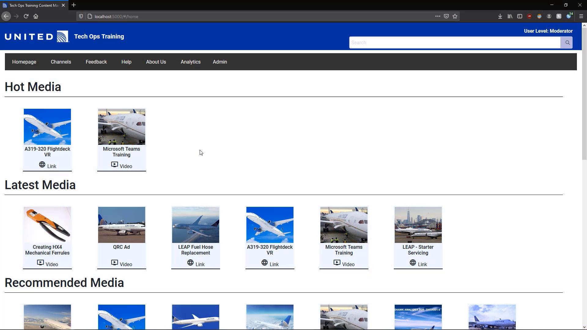
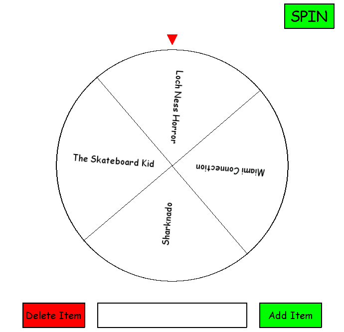
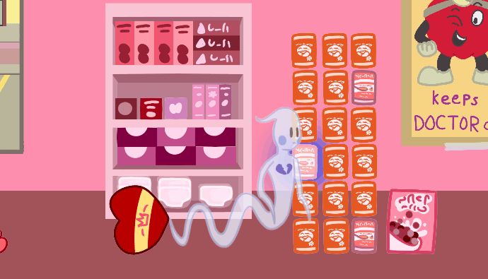

WELCOME TO MY WEBSITE
This is the official site of Brendan Walsh.
Click the sidebar button in the upper left to navigate the website.
ABOUT
Biography
My name is Brendan Walsh, and I am always looking to learn new things. I am an alumnus of Michigan State University with a bachelor’s degree in Computer Science and a minor in game design.
For the longest time, I have been fascinated with technology. As a child, I got into computers by editing stop motion films that I created with Legos. For a long while, I thought that I wanted to be a movie director. However, I am excited by opportunities to try new things, so when I was in high school, I decided to try my hand at game development. I began looking into what skills I would need to make a game, and I started teaching myself 3D modeling, level design, and of course, programming. The language I started learning to code with was Python, and I was instantly captivated. I started making simple text games at first, and then started working my way up from there. I then moved on to messing around with game engines, such as Unity, Unreal, and Source. I began taking courses for computer science and game design at my high school. I couldn’t get enough of what I was learning. I knew that I had found my passion and my path in life, and that it was to become a programmer.
After high school, I decided to go to Michigan State University to study computer science, as my entire family is comprised of Spartans. College was a great experience, and really taught me a bunch about programming that I feel I never would have been able to learn on my own. It also provided me many new opportunities for personal growth. My school sponsored and promoted a lot of hackathons, and I made a point to go to a bunch of them. Every hackathon I went to taught me something new, and I enjoyed every single one I participated in. I’ve even gotten second place at a few of those hackathons, which is a fact I am quite proud of. My time in college, both in class and outside of class, has empowered me with invaluable knowledge.
I am an individual who is always looking to expand my knowledge of the world and of the amazing field of programming. This website itself was a personal project I started in the summer of 2020 as a means of teaching myself web development. I had some basic knowledge of HTML, CSS, and JavaScript prior to developing this website, but I never really got deep into until I started making this site. The decision to start developing this website was a great decision in hindsight, as many of the things I learned proved to be very useful in a future project I had with United Airlines. In terms of other projects, you can see several of them on the projects page of this site. One type of project I still really like making is games. At any given time, I will have like 5 different games I have been developing on and off. I really love having the ability to just create something out of nothing, and programming gives you that ability. With programming, you can turn your imagination into reality, so long as you have the skills for it.
It has now been several years since I chose to become a programmer, and I have now graduated from Michigan State with a bachelor’s degree in computer science. Now it is time for me to enter the real world and begin putting my skills to use. I hope that I can make the world a better place, and I also hope that I can continue to learn even more.
Hobbies
If I had to pick one hobby to do for the rest of my life, I would pick fishing. I have been an angler since I was very young, and I truly believe it is the best hobby someone can have. There’s nothing like the feeling of having a massive fish on the end of your line. I am also a fan of several other outdoor activities, such as camping, hiking, snorkeling, golf, and snowboarding. I think nature is fantastic and wish more people had an appreciation for it.
Another thing about me is that I see myself as a bit of an artist. In addition to making games and software, I enjoy storytelling quite a bit. In the fifth grade, I got into making movies, and learned the art of stop motion. While it has been quite a long time since I last filmed a movie, let alone a stop motion one, I still enjoy films quite a bit. I am something of a hobbyist writer and write film scripts and stories for fun somewhat frequently. I actually have a very (very) small following online for a story I’m writing. Another thing I like to do occasionally is digital art. I am somewhat of a hobbyist 3D artist and make things in Blender (such as all the background for this website.) Much of my Blender creations are meant to be used in games of mine, but sometimes I’ll just make something for the fun of it. I also have attempted to branch into 2D art on several occasions, and have taught myself how to use programs like GIMP and Inkscape. I am definitely more confident in my 3D art skills though. One art form I would like to try out, but haven’t yet, is music production. I am a really big fan of synthwave music (if you couldn’t tell from the visuals of this website) and would like to try making my own song some day in the future, just to see what the process is like.
Contact
You can contact me at walsh.brendan3@gmail.com
SKILLS
Languages
- Python
- C
- C++
- C#
- SQLite
- JavaScript
- Java
- HTML/CSS
- PHP
- ARM Assembly
Game Engines/Game Tools
- Unity
- Godot
- Source
- Unreal
- GameMaker Studio
- LithTech Talon
Other Software and Tools
- GitHub
- UML
- Linux/Unix
- Blender (used to make all the backgrounds for this site)
- GIMP
Other Skills
- Agile/SCRUM development
- 3D modeling
- Game level design
- Strong teamwork skills
- Quick learner
Projects

Tech Ops Training Content Management System
Created: September 2020 - December 2020
The Tech Ops Training Content Management System is a project I worked on for United Airlines during my capstone course at Michigan State University. It is a web application meant to deliver training media to United Airlines Technicians in an intuitive way. It is similar to websites like YouTube or Vimeo in how the training content is displayed, although it is capable of displaying media other than videos as well. There are also several special features for elevated user roles such as moderators and administrators which allow them to manage the site and the content within it.
I was a part of a 4-person student team and was also the liaison who managed all communications between the United Airlines project sponsors and my team. The project was developed in a remote environment within a 14-week time frame. Our project sponsors gave us specifications for what they wanted from us, and my team and I had to learn the necessary technologies to design and deliver the finalized application within that time frame.
Much of my work on the project was with the Angular front end. The Angular framework was something I had never used prior to the project, so I had to quickly learn and excel in using it in order to meet the expectations of our sponsors. Prior to the programming, there was also a lot of design work that I was active in. We had to come up with UML diagrams for the classes we needed to implement, and ER diagram for the database, and mockups for what we wanted a lot of the pages to look like.
In the end, the project came out fantastic. Our sponsors from United Airlines were very happy with the end result, and decided to continue working on it after the semester was over. We made a video to show off the project for the capstone course, and we won the TechSmith Screencast Award for the best project video of the 30 submitted for the course. However, I feel that my most important takeaway from the project was the experience itself. I learned a lot of technologies from the project that I had never used before, and I also learned a lot about working on a software project for a corporate client. The entire experience was very enlightening.
If you would like to know more about the project, you can watch my team's award-winning video demonstation of it below on the linked project page.

Endothermic
Created January 2021 – April 2021
Endothermic is a single player first-person survival horror game where you must escape a heat absorbing monster that is infesting your spaceship. The gameplay consists of maintaining the power of your thermal camouflage suit and avoiding obstacles while you search for the resources necessary to repair the ship’s escape pod.
This project was created for the capstone course of the game development minor at Michigan State University. The game was developed by an 8-person student team using the Unity engine. My main role in the project was that of the lead programmer, where I had to provide direction as to what systems needed to be programmed, and how the programming work should be divided. The programming team only consisted of myself and one other person. The small number of programmers presented numerous challenges during development in how we needed to tackle creating large systems for the game. One solution that allowed us to speed up development was to use existing open-source libraries for some of the functionalities. For instance, the first-person controls were done using the First Person All-in-One package by Aedan Graves. We also used the EZ Camera Shake library by Anderson Addo to add in camera shaking effects for greater immersion when the player was damaged. However, many of the other systems had to be created from scratch by myself and the other programmer on the team.
In terms of the systems I created; much of my work was spent on the antagonist of the game. The monster that would be terrorizing the player was rather unusual in concept for this type of game, with it being more of something that grows and changes the environment, rather than chasing the player around. Implementing such an entity in code was no easy task. The designers gave me a general idea of what they wanted it to do, and I had to figure out what I could and couldn’t do with the engine to get it working. The monster spreads itself throughout the level via spores, which traverse the level and begin infesting rooms around the level, which can then spread more spores. Infested rooms begin spawning hazards that either drain the heat of the room or attack the player. When developing my solutions to the design specifications, I had to really communicate with the design team and figure out how specifically they wanted everything to work. Once I had the specifics down, I was able to come up with a game plan. For the rooms in the level, I came up with a room class that had variables for temperature and whether it was infested or not. For the monster spores, I had to figure out a good way for them to look for a desirable room to infest that was not already targeted by another spore, and I had to figure how to make them navigate through the level to get to their intended room. There was also a matter of getting the structures in the level to spawn, and how to allow the level designers to easy decide where they wanted the structures to appear at. To solve this issue, I came up with a node based spawning system, where each enemy structure had its own node which could be placed and rotated at any spot in the level, and the node would automatically assign itself to the room it was placed closest to. When the room became infested, the nodes would then be turned into enemy structures. This implementation worked fantastic and made the job of level design much easier for other members of the team. Everything involving the enemy of the game was a challenge to implement, but I am quite happy with what I accomplished. There are quite a few other systems I created as well for the game though.
Several other systems in the game were coded by me as well. There was a system for interactable objects in the level that I created from scratch. Basically, if there was a button on the wall, you could press it to open a door, or you could also use that system to open computer terminals and read some text that would give you insight into what was going on in the plot. I also provided the initial implementation of the temperature system for the game, and handed it off to the other programmer on the team for refinement once I had created a good base for it. There were also plenty of other small miscellaneous things I coded up throughout the project.
My work was not solely confined to programming, however. Throughout development, I gave a ton of insight and ideas as to where I thought the game should go. I came up with a lot of ideas for the design, even though I wasn’t officially a designer. If I saw a perceived issue, I would bring it up to the whole team, and would facilitate discussions as to how and who we needed to fix the issue. I also did all of the writing for the backstory and plot of the game. I even created some placeholder 3D models during a certain phase of development. I gave my all to this project, and helped out in any way I could, even if it was not specifically my job.

Best Worst Wheel
A Wheel of Fortune style graphical selection wheel. The user spins it, and it will eventually come to a stop on an item on the wheel. The user can add or delete items from the wheel, as well as spin it. Items that are added are stored in a local SQLite database, so they are loaded again when the user closes and reopens the program.

Wingman from the Other Side
Voted as one of the most innovative game projects of MI445 in Fall semester 2019, Wingman from the Other Side is a physics based puzzle game built with Unity engine. You play as Laramie the ghost, whose job is to possess objects in each level to bring a couple together. I provided a lot of the underlying C# programming for the game's systems, and also helped with various other aspects of the game. I particularly enjoyed working on this game, and had a great experience with the team I worked on it with.
Trailer Game Page (Charity) Game Page (Outdated GameJolt Version)

Cretaceous Companion
Cretaceous Companion is a game I helped create in my Intro to Game Design and Development class. I mostly handled programming but helped out in various other aspects of the game as well. This was the second group project of the class, and of the 8 games submitted by the whole class, was voted to be the most fun game. Cretaceous Companion was also chosen as an "Outstanding Game Project" in Fall 2019.